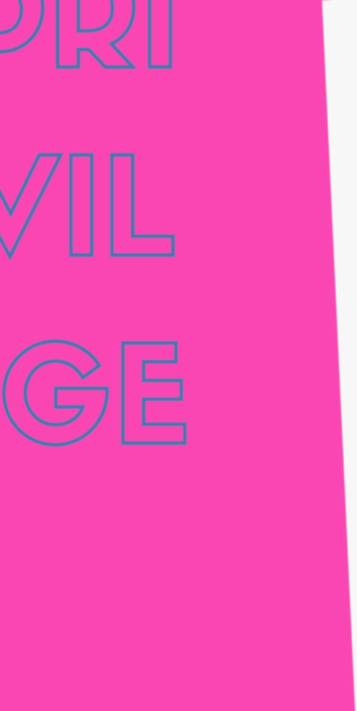

En hemsida för det konstnärliga forskningsprojektet Privilege som vill:
Sprida kunskap om bildkonst, scenkonst, koreografi, musik, ljudkonst och grafisk design skapad av adopterade koreaner
TRANS-
In 1993 when BLO (Barbie Liberation Organization12 switched the sound-chip between G.I Joes and Barbie dolls and put them back into the shopshelves, (they also changed the words they spoke to collerate with their new voice but mismatch with their physical representation)